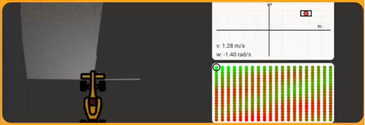

Durante esta semana se ha continuado avanzando en el nuevo ejercicio Dynamic Window Approach (DWA) para Robotics Academy Premium. El trabajo se ha centrado principalmente en dos aspectos: por un lado, finalizar el diseño de los visores específicos del ejercicio y, por otro, mejorar la solución de referencia hasta conseguir que el robot sea capaz de completar una vuelta completa al circuito evitando tanto obstáculos como paredes utilizando únicamente la técnica DWA.
Los visores desarrollados durante la semana anterior han evolucionado hasta alcanzar prácticamente su aspecto definitivo. Aunque mantienen la misma filosofía visual inicial, se han incorporado algunos elementos adicionales que facilitan la comprensión del algoritmo y ayudan a los alumnos durante la implementación.

Uno de los cambios más relevantes consiste en la representación explícita del tamaño de la ventana dinámica dentro del visor superior. Gracias a ello es posible observar en tiempo real cuáles son las velocidades lineales y angulares alcanzables por el robot en cada instante, teniendo en cuenta sus limitaciones dinámicas.
El visor inferior continúa mostrando el mapa de puntuaciones calculado para todas las combinaciones de velocidades evaluadas, permitiendo identificar visualmente cuál es la mejor acción disponible y cuál será finalmente seleccionada por el algoritmo.
Además del trabajo realizado sobre la interfaz visual, se ha continuado afinando la solución del ejercicio para conseguir un comportamiento robusto a lo largo de todo el circuito. El objetivo era que el robot fuese capaz de navegar entre los distintos puntos de control evitando colisiones y sin quedar bloqueado en situaciones complejas.
La implementación sigue la filosofía clásica de DWA: generar múltiples trayectorias candidatas, simular su evolución futura y asignar una puntuación a cada una de ellas para seleccionar posteriormente la mejor.
Uno de los elementos más importantes de la solución es la función de evaluación. Para cada trayectoria simulada se calculan tres métricas: alineación con el objetivo (heading), distancia a obstáculos (clearance) y velocidad de avance (speed).
score = (
ALPHA * heading_score +
BETA * clearance_score +
GAMMA * speed_score
)La puntuación final se obtiene mediante una combinación ponderada de estos tres criterios. De esta forma el robot no solamente intenta avanzar rápidamente hacia el objetivo, sino que también mantiene una distancia segura respecto a los obstáculos presentes en el entorno.
Para cada par de velocidades lineal y angular perteneciente a la ventana dinámica se realiza una simulación hacia el futuro. El resultado es una trayectoria candidata que posteriormente será evaluada.
for v in v_values:
for w in w_values:
traj = simulate_trajectory(v, w, DT, STEPS)
score, heading_s, clearance_s, speed_s = evaluate_trajectory(
traj,
targetx_rel,
targety_rel,
v,
w,
laser_xy
)Este procedimiento permite explorar una gran cantidad de movimientos posibles en cada iteración y seleccionar siempre la alternativa más adecuada para la situación actual.
Una vez evaluadas todas las trayectorias, la información se envía a los visores desarrollados específicamente para este ejercicio.
WebGUI.showDynamicWindow([
(p["v"], p["w"], p["score_norm"])
for p in all_traces
])
WebGUI.showBestVelocity([best_v, best_w])Gracias a estos visores es posible observar tanto el espacio completo de soluciones disponibles como la velocidad finalmente seleccionada por el algoritmo en cada ciclo de control.
Como resultado del trabajo realizado, la solución desarrollada es capaz de completar una vuelta completa al circuito evitando correctamente los obstáculos y siguiendo la secuencia de objetivos propuesta por el ejercicio.
El vídeo asociado a esta práctica muestra el comportamiento del robot y cómo el algoritmo DWA evalúa continuamente las distintas trayectorias para seleccionar la mejor acción posible.
Durante esta semana se ha alcanzado la versión final del ejercicio Dynamic Window Approach. Los visores ya presentan el aspecto final previsto y la solución desarrollada ha demostrado ser capaz de completar el circuito completo utilizando exclusivamente la estrategia DWA, constituyendo una base sólida para la futura incorporación del ejercicio a Robotics Academy Premium.
← Volver a la Semana 9